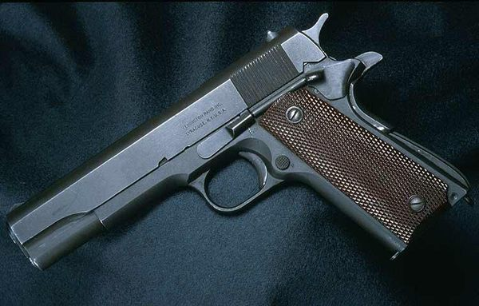

柯特OHWS半自動手槍

柯特OHWS由於以柯特過去的各把手槍為框架設計製造，使用10發單排彈匣供彈，所以亦有M1911的握把式保險、雙鷹的扳機及待擊解脫桿操作，人體工學設計亦較HK Mk 23 Mod 0良好。該手槍的設計可在滑套前的搭扣裝置上加裝其可拆卸設計的消音器和雷射瞄準器以及使用.45 ACP比賽等級手槍子彈。
1990年代初，柯特開發了OHWS手槍，以爭奪美國特種作戰司令部「進攻型手槍武器系統」項目的合同。柯特OHWS手槍在生產上就是發射.45 ACP彈藥，但還要進一步設計為可發射大部分.45 ACP彈藥，包括特種作戰司令部意圖使用的主要彈種.45 ACP高膛壓型彈藥。當時的柯特手槍沒有承受持續地高膛壓型彈藥的強度，柯特的決定不是修改以前特種作戰司令部使用的M1911A1類武器以符合特種作戰司令部的當前需要，而是更具成本效益的生產一把全新的手槍。
柯特OHWS手槍是結合了柯特的其他槍械，包括M1911A1、雙鷹和全美2000以上最佳功能的彙編。柯特使用了全美2000系統的旋轉槍管閉鎖——專為手槍研製的最強鎖定系統之一；雙鷹的雙動操作扳機與待擊解脫桿、擊錘；以及M1911A1的手動保險和擊發機構，雖然可調節和產生後座力的少得多。其設計是從M1911A1修改而成，只是大多數機械加工和滑套是由不鏽鋼製成。柯特增加了一個滑套鎖，以阻止機構和滑套的復進的聲音所導致的敏感事件。為了促進其可靠性，柯特決定採用容彈量10發的單排式彈匣而非雙排式彈匣。柯特OHWS手槍的一個有趣的特點在於槍口附件的安裝是藉由底把來達成的，而不是移動槍管，它們是通過增加一條延長導軌與撥動式開關這樣達到的。這設計的缺失是槍口制退器不是在恰當的地方時，無法裝上消音器。柯特在防塵蓋以下添加一條額外導軌以安裝戰術燈和LAM。
但由於特種作戰司令部發現柯特OHWS手槍過於笨重，不如預期般耐用，而且使用的附件亦需要一絲不苟的使用與配合，導致在該次特種作戰司令部的合同競標之中被其競爭對手黑克勒&科赫設計的HK Mk 23 Mod 0所擊敗而落選。
特點：1.射擊精度好 2.操作簡單 3.通用性強。